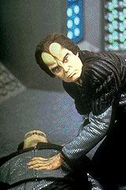
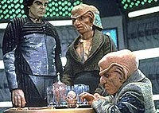
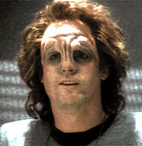

MANCHETE
DO EPISDIO
Histria
de sensibilidade tenta explorar
motivaes do comissrio de DS9
Episdio
anterior | Prximo
episdio
Sinopse:
Data Estelar:
desconhecida.

Um
misterioso fugitivo do quadrante Gama, Croden, chega a Deep
Space Nine. Na estao, Croden participa de uma
tentativa frustrada de roubo, que tem como resultado a morte de um
gmeo da espcie dos Miradorn - aliengenas que s vivem em
pares. Odo prende Croden imediatamente.
Tentativas de contato so feitas com o governo de Croden, que o
declara como um fugitivo da justia. Enquanto isso, o gmeo
Miradorn sobrevivente jura vingar a morte do irmo.
Enquanto est sob custdia, Croden conta inmeras histrias
sobre uma raa de transmorfos nativa do quadrante Gama, que pode
conter as razes para o misterioso passado de Odo.
Finalmente, quando Odo vai levar Croden para as autoridades de seu
planeta, o ataque do Miradorn os leva a aterrissar em um planeta
onde se revelam as reais motivaes de Croden: resgatar sua
filha mantida em animao suspensa.
Ao final, aps se livrarem do Miradorn, Odo deixa pai e filha em
uma nave Vulcana rumando para Vulcano.
Comentrios:

"Vortex"
uma histria de sensibilidade. Desde as motivaes do
aliengena conhecido como Croden, at os objetivos e conflitos
pessoais de Odo, tudo nos leva a essa mesma constante.
Infelizmente, o enredo por trs do tema no apresenta toda a
qualidade que poderia, impedindo o desenvolvimento mximo do
episdio.
A histria do "gmeo Miradorn com sede de vingana"
no diz muito e "possveis histrias sobre o passado de
Odo" no so absolutamente interessantes por si mesmas.
Por outro lado, Croden (Cliff DeYoung) um suficiente misto de
simpatia, dvida e nobreza, suficiente para manter o
telespectador entretido.

Em
especial, merece destaque a forma como ele atinge o
"calcanhar de Aquiles" de Odo, o que faz com que as
reais motivaes do chefe de segurana venham tona de modo
bastante evidente.
Ren Auberjonois faz, como sempre, um belo trabalho.
Do episdio, s sobrou uma perguntinha: como um transmorfo pode
ser posto a nocaute por uma pedra? Algum sabe?
Citaes:
Croden - "Don't thank
me, I already regret it."
("No me agradea, eu j estou arrependido.")
Trivia:
 Episdio conta com a participao de Rom.
Episdio conta com a participao de Rom.
Ficha
tcnica:
Escrito por Sam Rolfe
Direo de Winrich Kolbe
Exibido em 19/04/1993
Produo: 012
Elenco:
Avery Brooks como
Benjamin Lafayette Sisko
Ren Auberjonois como Odo
Nana Visitor como Kira Nerys
Colm Meaney como Miles Edward O'Brien
Siddig El Fadil como Julian Subatoi Bashir
Armin Shimerman como Quark
Terry Farrell como Jadzia Dax
Cirroc Lofton como Jake Sisko
Elenco convidado:
Cliff Deyoung como Croden
Randy Oglesby como Ah-Kel e Ro-Kel
Max Grodnchik como Rom
Gordon Clapp como Hadran
Kathleen Garrett como "a capit
Vulcana"
Leslie Engelberg como Yareth
Majel Barrett como "a voz do
computador"